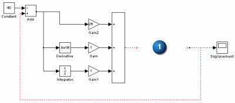
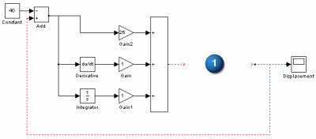

Simulink 控制系统文件
在 Simulink .mdl 文件中创建控制系统框图。这个文件表示控制系统的动作，并且应该为 Motion Plant (它表示机械系统)留一个空间。
在下面的示例控制系统中， 表示框图中为 Motion Plant 块预留的空间。
表示框图中为 Motion Plant 块预留的空间。

正如下面的动画所显示，软件将生成 Motion Plant，您将它拖动到框图的预留空间中，并将它与控制系统的输入和输出连接。
在 Simulink .mdl 文件中创建控制系统框图。这个文件表示控制系统的动作，并且应该为 Motion Plant (它表示机械系统)留一个空间。
在下面的示例控制系统中， 表示框图中为 Motion Plant 块预留的空间。
表示框图中为 Motion Plant 块预留的空间。

正如下面的动画所显示，软件将生成 Motion Plant，您将它拖动到框图的预留空间中，并将它与控制系统的输入和输出连接。